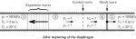
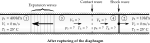
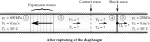

Chapter 7: Expansion Waves: Prandtl-Meyer Flow
This chapter contains 23 unsolved problems.
For further details, please contact me at:
For further details, please contact me at:
| # | Short Problem Description | Manual solution Inactive links |
Computer solution Inactive links |
|---|---|---|---|
| 1 | Mach number, pressure, temperature behind expansion waves |
q01.pdf | q01.py |
| 2 | Oblique shock and expansion waves |
q02.pdf | q02.py |
| 3 | Expansion wave reflection |
q03.pdf | q03.py |
| 4 | Expansion wave reflection |
q04.pdf | q04.py |
| 5 | Expansion wave angles and pressure drop |
q05.pdf | q05.py |
| 6 | Expansion and oblique shock wave |
q06.pdf | q06.py |
| 7 | Expansion wave reflected off a free boundary |
q07.pdf | q07.py |
| 8 |  Expansion waves interacting with each other |
q08.pdf | q08.py |
| 9 | Supersonic flow over symmetric double-wedge shaped body |
q09.pdf | q09.py |
| 10 | Lift and drag of a wing modeled as flat plate |
q10.pdf | q10.py |
| 11 | Lift and drag acting on the airfoil |
q11.pdf | q11.py |
| 12 | Lift acting on the airfoil |
q12.pdf | q12.py |
| 13 | Properties in the flow over a wall with bump |
q13.pdf | q13.py |
| 14 | Oblique shock waves and maximum turning angle |
q14.pdf | q14.py |
| 15 | Angle of a thin flat plate |
q15.pdf | q15.py |
| 16 | Rupture of safety diaphragm |
q16.pdf | q16.py |
| 17 | Velocity, Mach number induced by unsteady expansion wave |
q17.pdf | q17.py |
| 18 | Valves at inlet and exit simultaneously closed |
q18.pdf | q18.py |
| 19 | Valves at inlet and exit closed |
q19.pdf | q19.py |
| 20 | End of the tube suddenly opened |
q20.pdf | q20.py |
| 21 |  Diaphragm suddenly ruptures |
q21.pdf | q21.py |
| 22 |  Shock tube |
q22.pdf | q22.py |
| 23 |  Shock tube |
q23.pdf | q23.py |
If you observe any error or want to provide me with feedback, please don't hesitate to contact me.
Thanks,
Sourabh Bhat
Thanks,
Sourabh Bhat